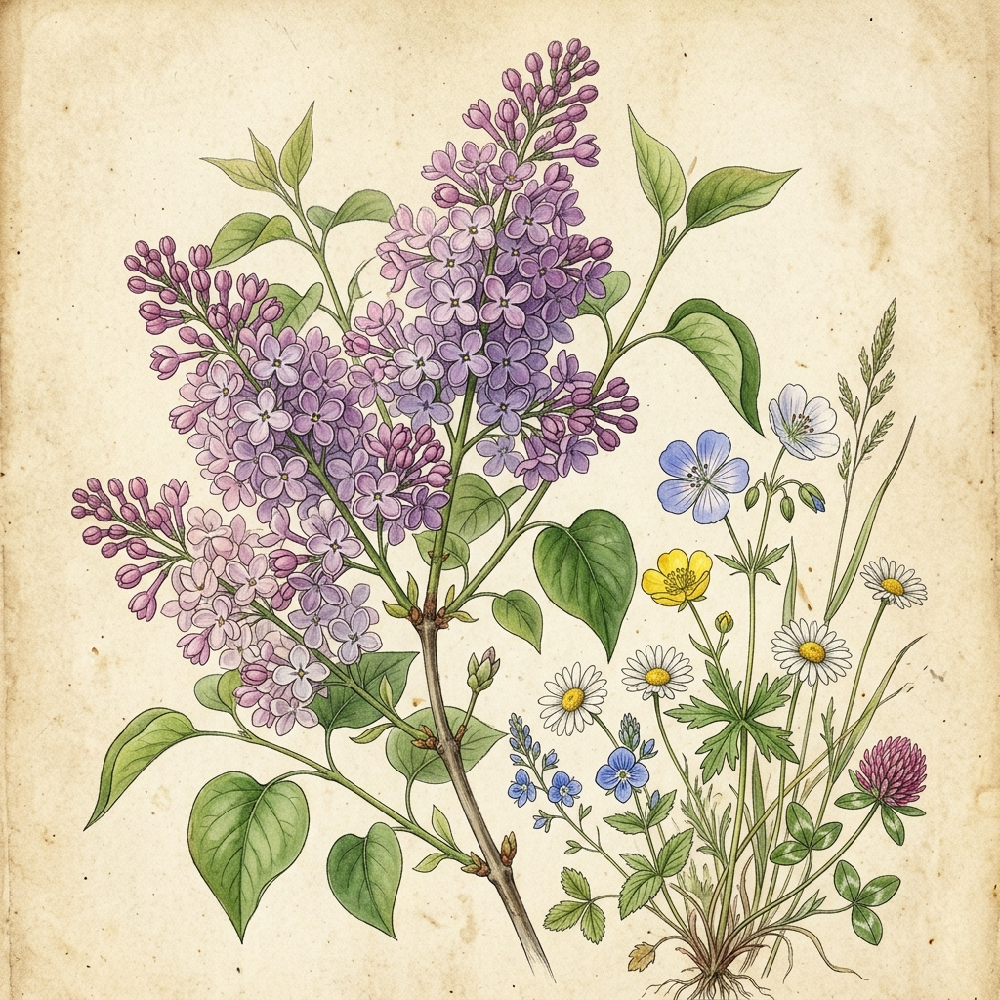

THE SOLID STATE OF LIFE
Sometimes you have to work so hard it stops being discipline and becomes obsession. Not the kind people warn you about — not the hollow, performative grind. The other kind. The quiet kind...
Read more →I photograph landscapes that exist for thirty seconds before the light shifts and they're gone. I track the night sky. I think about stars in a way that makes most other things feel briefly unimportant.
I write in quiet hours — quiet writing, short, sharp, the kind of sentences that arrive when everything unnecessary has been stripped away.
Sometimes you have to work so hard it stops being discipline and becomes obsession. Not the kind people warn you about — not the hollow, performative grind. The other kind. The quiet kind...
Read more →The economist George Stigler once said, "If you never miss a plane, you're spending too much time at the airport." It's a small line with a big idea tucked inside it. If you never fail at anything,...
Read more →There are places where life stops performing and simply exists unfiltered, unhurried, and unapologetically real. A shoreline, where the sea breathes in long, patient rhythms, and flowers spill over edges and pathways...
Read more →